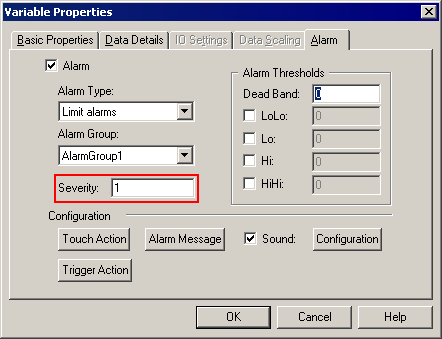
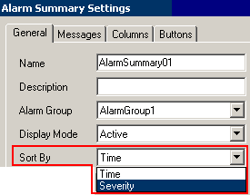
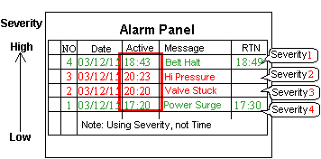
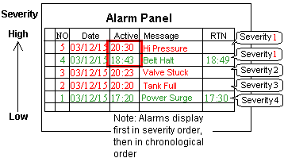
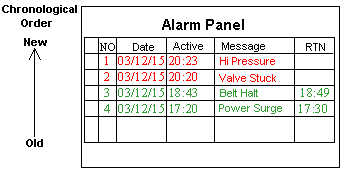

|
|
|
|
|
|
|
|
When alarms occur at runtime, you can display alarm messages in the order of importance. The severity can be set from 1, which means most important, to 999, which means least important. Alarm summary messages are sorted in ascending or descending order of severity. In alarm banners, severity also determines the order that alarm messages are displayed. You can configure different alarm message colors for each alarm severity. For more information on alarm severity colors, see Section 16.2.6.2, Messages Tab.
You can also map alarm severities to backlight colors. For more information, see Section 16.5.2, Changing the Backlight Color.
In order to display alarms in the order of severity, set up the severity level for each alarm in the Variables Properties dialog box and set the alarm summary to sort alarms by severity.
In the Variable Properties dialog box, set up the alarm severity value, 1~999, for each alarm

In the Alarm Summary Settings dialog box, set the Sort By field to Severity.

Alarms in the alarm summary are now displayed in the order of importance.
When ScrollDirection = Down, alarms with the highest severity appear at top.

Alarm messages with the same severity are displayed in chronological order.


When SortBy=Time
Alarm messages display in chronological order.
